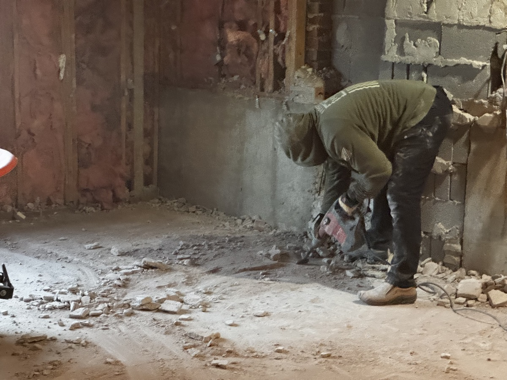

If you've got an old driveway, a cracked patio slab, a garage pad you don't need anymore, or a foundation left behind from a structure that's already gone, this guide is for you. Concrete removal in Columbia, MO is one of the most common jobs we run, and the process is more straightforward than most people think.
I'm Chris Kurtz, owner of Atlas Excavation & Demolition. We tear out concrete every week somewhere in Mid-Missouri. This post walks through what concrete removal actually involves by project type, what it costs, how long each one takes, and what we leave behind when we drive off.
Quick Answer: Concrete removal in Columbia, MO covers driveways, patio slabs, sidewalks, garage pads, and old foundations. Most residential jobs run $3 to $7 per square foot for tear-out and haul-away, and a typical driveway or patio comes out in a single working day. Atlas Excavation & Demolition handles the breaking, loading, hauling, dump fees, and rough grade as one flat price. Free on-site walkthroughs across Mid-Missouri at (573) 234-6641.
In This Guide:
What Concrete Removal Covers in Columbia, MO
Concrete removal is the work of breaking up, loading, and hauling away an existing concrete pour so the ground underneath is open again. It's a separate trade from concrete repair, polyjacking, or slab leveling. Those services try to save the concrete you have. We tear it out and get it gone.
The concrete removal jobs we handle most often around Boone County:
- Driveways. Cracked, settled, stained, or just outdated. Single-car, double-car, and long rural drives.
- Patio slabs. Backyard patios, side patios, pool deck slabs, and sunroom pads.
- Sidewalks and walkways. Front walks, side-yard runs, and city-edge sidewalks.
- Garage pads and floors. Detached garage pads after the building is gone, or garage floors during a rebuild.
- Shed and outbuilding pads. Pour-on-grade pads from sheds and small outbuildings that have been removed.
- Old foundations. Stem walls, slab foundations, and footings left behind from teardowns.
- Pool decks and surrounds. Concrete around pools that are being removed or rebuilt.
If your project doesn't fit one of these, send a photo and we'll tell you whether it's something we run. We don't do concrete repair, lifting, or polyjacking. For that work, you want a concrete leveling outfit, not a demolition contractor.
Driveway Removal in Columbia, MO
Driveway tear-out is the single most common concrete removal job we run. Most residential driveways in the Columbia area are 4 inches thick, sometimes 6 inches in spots, sometimes reinforced with mesh or rebar where the original installer thought it would matter. The age of the pour drives most of the cost. A 30-year-old driveway with surface cracks comes out fast. A 50-year-old reinforced pour with crumbling sub-base is slower.
Typical driveway removal numbers:
| Driveway Type | Square Feet | Typical Cost Range | Time On Site |
|---|---|---|---|
| Single-car driveway | 300 to 500 sq ft | $1,200 to $2,800 | 4 to 6 hours |
| Standard double driveway | 600 to 900 sq ft | $2,400 to $5,400 | 6 to 9 hours |
| Long rural driveway | 1,200 to 2,000 sq ft | $4,500 to $11,000 | 1 to 2 days |
| Heavily reinforced (rebar grid) | any | +15 to 25% | +2 to 4 hours |
What the price covers: breaking, loading, hauling, dump and tipping fees, and a rough grade after the pour is gone. No allowances for thickness or rebar. The number we give you is the number you pay. For a deeper breakdown of pricing variables, see our piece on concrete removal cost in Columbia, MO.
Patio and Slab Removal
Patios, sunroom pads, walkways, and detached pads are usually thinner than driveways (often 3 to 4 inches) and most don't carry rebar. They come out faster per square foot. The catch with slabs is access. A backyard patio behind a fenced lot in Columbia means smaller equipment, more handwork, and more wheelbarrow trips to the truck. That access cost is real and we account for it during the walkthrough.
What we look at on a slab walkthrough:
- Access. Can a skid steer get to the slab without taking down a fence panel? If not, we plan around it.
- Thickness. Probe a corner with a small bar to confirm the actual depth.
- Tie-ins. Is the slab attached to a foundation, a wall, or another slab we are not removing? That changes the saw-cut plan.
- What's underneath. Vapor barrier, a drainage pipe, an old gravel base, or an irrigation line. We hit all of these often enough that the walkthrough matters.
Most residential patio slabs and walkways under 400 square feet come out in 3 to 5 hours and run $900 to $2,200 for tear-out and haul-away. Larger patios or pool deck surrounds with multiple tie-ins and tight access can stretch into a longer half-day or a second crew shift.
Old Foundation Removal
Foundations are the heaviest concrete removal work we do. We see two common scenarios in Mid-Missouri.
The first is a slab foundation left behind after the structure on top has already been demolished. A previous contractor took the building down but stopped at the slab. The owner now has a flat concrete pad sitting in the yard with nothing on it. Removing one of these is straightforward. We break and load like any other slab, but volumes are higher and the haul count is higher.
The second is a stem wall foundation with footings, often left from an old garage, shed, barn, or even a partially demolished house. These run deeper into the ground (footings can sit 12 to 30 inches down depending on what was originally built), and the work involves digging out the wall and footing as well as breaking the slab between them. That's more equipment time and more soil disturbance. We grade the area flat and ready for fill or new construction when we're done.
Foundation removal typically runs $5 to $12 per square foot of footprint, depending on depth, reinforcement, and whether asbestos-containing materials are stuck to the slab. A 600 sq ft slab foundation runs $3,000 to $7,000. A 1,200 sq ft foundation with footings can land between $7,000 and $14,000. We give a flat price, in writing, after walking the site.
If the foundation is part of a teardown where the building still stands, that work usually rolls into the structure's demolition scope, not a standalone concrete removal scope.
The Atlas Concrete Removal Process
Every concrete removal job we run in Columbia follows the same five steps.
- Free on-site walkthrough. We come out, measure the pour, probe the depth, look at access, and check for tie-ins or buried services. No charge, no pressure.
- Written flat price. Within 48 hours of the walkthrough, you get a single number with the scope spelled out. No allowances. No add-ons later.
- Schedule and locates. Once you sign, we file utility locates with Missouri One Call (you also can submit a Missouri One Call ticket directly), and put your job on the calendar. Most residential jobs are scheduled within 1 to 3 weeks of approval, faster in slow seasons.
- Tear-out day. We bring the right equipment for the size of the job, break the pour, load the trucks, and haul off. We sweep up. We don't leave a pile of dust on your siding.
- Rough grade and walkthrough. Before we leave, we grade the area flat so it drains and is ready for whatever's next. Then we walk it with you.
That's it. No surprise fees, no unanswered calls, no disappearing crew. The biggest complaint Mid-Missouri property owners have about local contractors is that calls go unreturned. We pick up or we call back the same day.
Mid-Missouri Specifics That Affect Concrete Removal
A few things about doing this work in Boone County and the surrounding area that don't show up in national content.
Freeze-thaw on older pours. Mid-Missouri runs through a hard freeze-thaw cycle every winter. Concrete poured before the early 1980s tends to be brittle and cracked through, which actually makes removal faster. Pours from the late 1990s and early 2000s with fiber mesh come out cleaner but slower because the slab tends to come up in larger pieces.
Clay soil under the pad. Most of the soil in Boone, Audrain, and Callaway counties is heavy clay. When you pull a slab and the clay is wet, the equipment leaves ruts. We plan around weather windows, especially in the spring. If we have to come back the next day to finish a grade once the ground dries, we do.
Boone County recycling availability. We can recycle clean concrete locally instead of paying landfill tipping fees. Most clean driveway and patio concrete from Columbia, Ashland, Boonville, and Fulton jobs gets crushed and reused as road base. That savings is built into the prices above. For the disposal side of demolition jobs more broadly, see our piece on demolition debris disposal in Columbia, MO.
Permitting. Standalone flatwork removal (driveways, patios, sidewalks) usually doesn't trigger a city permit in Columbia. Foundation removal tied to a structure does, but that scope generally rolls into a full demolition permit. We pull what's required.
Cities we serve. We run concrete removal jobs across Columbia, Ashland, Harrisburg, Hallsville, Boonville, Fulton, Centralia, Rocheport, and the rural areas of Boone, Audrain, Callaway, Cole, Howard, Cooper, and Moniteau counties.
Why Mid-Missouri Property Owners Use Atlas for Concrete Removal
I'm not going to tell you we're the only outfit that can run a skid steer and a hammer. I'll tell you what's actually different about working with Atlas.
- We answer the phone. Most concrete removal calls in this area never get returned. We pick up or call back same day.
- Flat written price. No allowances, no per-pound disposal fees showing up at the end. The number we give is the number you pay.
- One scope, one bill. Breaking, loading, hauling, dump fees, and rough grade are all in one line item.
- Free on-site walkthrough. We measure, probe, and look at access in person before quoting. No phantom estimates from a satellite photo.
- Licensed and insured. Certificate of insurance available on request. Every job.
- Clean site when we leave. Driveway, sidewalks, and yard swept. Rough grade in. Ready for the next step.
The full concrete removal services page lists every variant we run and what's included.
Ready to Tear It Out?
Atlas Excavation & Demolition handles concrete removal for driveways, slabs, and foundations across Columbia, MO and Mid-Missouri. Get a free on-site walkthrough and a flat written price.
Get Your Instant Estimate Call (573) 234-6641Frequently Asked Questions
How much does concrete removal cost in Columbia, MO?
Most residential concrete removal jobs in Columbia, MO run $3 to $7 per square foot for tear-out and haul-away, with smaller driveways and patios falling between $1,200 and $4,500 total. Thicker pours, reinforced slabs, and old foundations push the per-foot number higher because of cutting time and disposal weight. Atlas gives a flat written number after a free on-site walkthrough, and that number includes equipment, labor, dump fees, and a rough grade when we leave.
Can you remove a concrete driveway and haul it away in one day?
Most standard residential driveways in the Columbia area come out in one working day. A 600 to 900 square foot driveway with 4 to 6 inch pour depth typically breaks, loads, and hauls in 6 to 9 hours, including final cleanup. Larger driveways, reinforced slabs, or sites with tight access can stretch into a second day. We'll tell you which one you have during the walkthrough so the schedule is set before we start.
Do I need a permit to remove a concrete slab or foundation in Columbia?
For most residential concrete removal, the City of Columbia does not require a separate demolition permit if you are removing a flatwork item like a driveway, patio, or sidewalk. Removing the foundation of an existing structure is different and usually rolls into the structure's demolition permit. We pull whatever is needed, file with the city, and coordinate with utility locates so the work is legal and safe before the hammer drops.
What happens to the concrete after you tear it out?
Clean concrete from a driveway, patio, or slab almost always goes to a recycling yard in the Columbia area, where it is crushed and reused as base material for roads and new pours. Concrete with heavy rebar or contamination may go to a permitted construction debris landfill. Either way, dump and tipping fees are included in the price we give you. You don't pay extra at the end.
Will you grade the area flat after the concrete is gone?
Yes. Every Atlas concrete removal job includes a rough grade so the area is flat, drains correctly, and is ready for whatever comes next. If you're pouring new concrete, putting in gravel, or seeding grass, we leave the site set up for that. If you need a finish grade or specific elevation work tied to a new build, we can quote that too as part of the same scope.
Get a Quote for a Concrete Removal Job
If you've got a driveway, slab, or foundation in Columbia or anywhere in Mid-Missouri that needs to come out, we'd be glad to walk the property and put a flat number in front of you.
- Phone: (573) 234-6641
- Email: hello@deployatlas.com
- Online: Instant estimate form
For related reading, see our pages on demolition services in Columbia, MO and our blog post on garage demolition cost, which often ties into concrete pad removal.